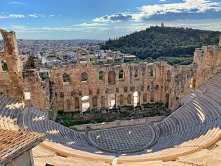
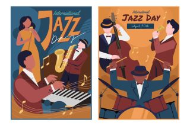

|
ビルボードヒットチャート
きっかけは、姉のラジオから流れてくるビルボードヒットチャート曲の数々
特にカーペンターズのイエスタデー ワンスモア、シング、トップ オブ ザ ワールド etc
彼らのデビューはビートルズの”涙の乗車券”のカバー曲から入っており、
”プリーズ ミスター ポストマン”なんかは、彼らの曲の方が断然良いです。
兄妹二人のグループだけど、私が聴き始めて間もなく、彼らの全盛期に
妹のカレン（Vo）が亡くなった時は、本当にすごくショックでした。
|
 |
|
プログレッシブ ロック
パンクやヘビーメタル、さらに
ビートルズ、ローリング ストーンズに
代表される”ブリティッシュ ロック”
そんな中でも私が好きなのは、
”プログレッシブ ロック”
|
|
ＦＭエアーチェック＆黎紅堂
部屋では音楽がずっと流れていた学生時代
ＦＭ放送番組のエアーチェックに熱中して、
時間があれば黎紅堂（レンタルレコード店）で品定め
テレビでは、ミュージックＴＶ（MTV）を観る。
今考えると、当時、関東の学生が起業したという ”黎紅堂”は、
私たちの救世主でした。
私にとって彼らは、学生ベンチャー１号です！
|
|
|
ビリー ジョエルの屋外コンサート
ビリー ジョエルが、しばらく休止していた音楽活動を再開して、
新曲のリリースとともに開始した待望のワールド ツアー
いつ始まるのか少し不安になるほど遅れた開始時間
そんな中、ビール片手に気長に主役の登場を待つ観衆を不思議に思ったりしてると、
しばらくして、やっと辺りが暗くなってきた頃、
会場内のキャンドルが一斉に灯り、いきなり大音量のバンド演奏が始まって、
ものすごい歓声が上がって、主役が登場して、やっと、気づいた、
みんな（主催者も観衆も）この”夕闇”を待ってたんだと
|
 |
|
ロック、ポップス、ジャズ／フュージョン、クラシック、イージーリスニング／スクリーンミュージック‥‥‥。
曲名もアーティストは知らなくても、どこかで何かの折に聴いて知っているって曲は沢山あります。
ところで、数あるクリスマスソング、お気に入りの曲は何ですか？
" Wonderful Christmastime " / Paul MacCartney
" I Saw Mommy Kissing Santa Claus " / Jackson 5 (vol. Michael Jackson)
|
|
|
 | |
| |
|
| |
「ラジカセ」は持ち運び可能だけど、音楽は部屋（ステレオ等）で聴くものだった。
そんな時にコンパクトなカセットテープのウオークマンが発売され、人々が殺到し、
「SONY」＝「Walkman」ってぐらいに、世界的にもインパクトがあったのです。 |
| |
 |
プログレッシブ ロック |
|
イエス： Fragile / Close To The Edge
キング クリムゾン： The Court Of The Crimson King
|
 |
こわれもの / 危機
クリムゾン王の宮殿 |
展覧会の絵
原子心母 / 狂気 |
|
エマーソン・レイク ＆ パーマー : Picture Of The Exhibition
ピンク フロイド : Atom Heart Mother / Tha Dark Side Of The Moon
|
|
 |
ハード ロック |
 |
|
魅力的なロックバンド
エイジア： プログレグループの元メンバーで結成されたスーパーユニット
"Heat Of The Moment", "Only Time Will Tell"
ボストン： ツインギターによる演奏が斬新だった
"More Than A Feeling", "Don't Look Back"
ハート： ウイルソン姉妹が率いる本格的ハードロックバンド
"All I Wanna Do Is Make Love To You", "Never"
ヴァン ヘイレン： ギターの名手ヴァンヘイレン兄弟率いるハードロックバンド
"Jump", "I'll Wait", "Panama" |
|
ロック界のスーパースター
リッチーブラックモア/ ディープ パープル
マーク ボラン/ T-レックス
ブルース スプリングスティーン |
|
|
ポップス & ロック |
|
ビートルズ
"レット イット ビー"、”アビーロード”、
"Sgt. Peper's Lonely Hearts Club Band"
"White Album" (通称)
地味ですけど、とても良いアルバムです！
|
 |
|
ビリー ジョエル
" Just the Way You Are "
" Piano Man " "An Innocent Man"
" Onesty " " Up Town Girl "
|
カーペンターズ
" Yesterday Once More "
" Top Of The Warld "
" Close To You " "A Song For You"
" Rainy Days and Mondays Always
Get Me Down " |
サイモン & ガーファンクル
" El Condor Pasa " |
|
|
- ギルバート オサリバン
" Alone Again "
- ウイングス
" Band On The Run"
- スリー ドッグ ナイト
" An Old Fashioned Love Song"
- バネッサ・ウイリアムズ
- ルパート ホルムズ
|
- シンディ ローパー
" Time After Time "
- ビージーズ
- アース・ウインド & ファイヤー
" September "
- スリー ディグリーズ
" Souel Train"
- シャーリーン
|
- マライア キャリー
" Without You "
- カーリー サイモン
" Let The River Run"
- アンテナ
- ミッシェル ポルナレフ
"シェリーに口づけ"
- エルトン ジョン
" Good-by Yellow BrickRoad "
|
- ロバータ フラック
" Kill Me a Song Softly "
- エンヤ
- アバ
"Dancing Queen"- E.L.O
" Time"
- カルチャー クラブ
|
 |
ジャズ ＆ フュージョン
イージー リスニング |
 |
ジャズ＆フュージョン
スティーリー・ダン : Aja ／ ドナルド フェイゲン : Night Fly
グローバー ワシントンJr : Just the Two of Us
タワー オブ パワー (Big Band)
ラリー カールトン ／ リー リトナー (Guitar)
|
 |
イージー リスニング
マントバーニ オーケストラ
レイモン ルフェーブル オーケストラ
ポール モーリア オーケストラ
ニニ ロッソ (Trumpett) |
|
Japanese Music
ポップス／フォークソング／ジャズ |
 |
中本マリ
”Zoot Suit Stomp”
初めて好きになったジャズの曲
とにかく演奏がカッコ良かった！ |
 |
上田千佳とカリョービン
上田千佳： ピアノ＆ボーカル
カリョービン： ヴァイオリン（x2）、ビオラ、チェロ
"乾杯！ ブラディマリー" "シネマ ストリート"
ピアノと管弦四重奏、シンプルだけど好きだったユニットです。 |
|
- 大瀧詠一
愛しのカレン
さらばシベリア鉄道
君は天然色
|
|
- NSP
夕暮れ時はさびしそう
面影橋／雨は似合わない
八十八夜／冬の花火は思い出花火
|